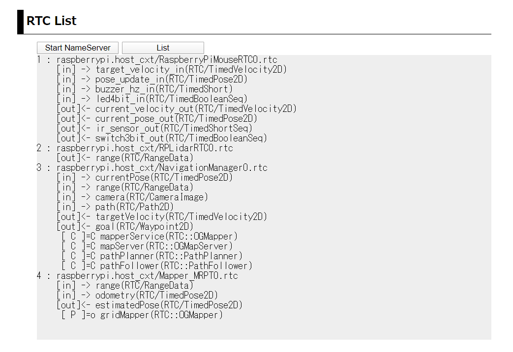
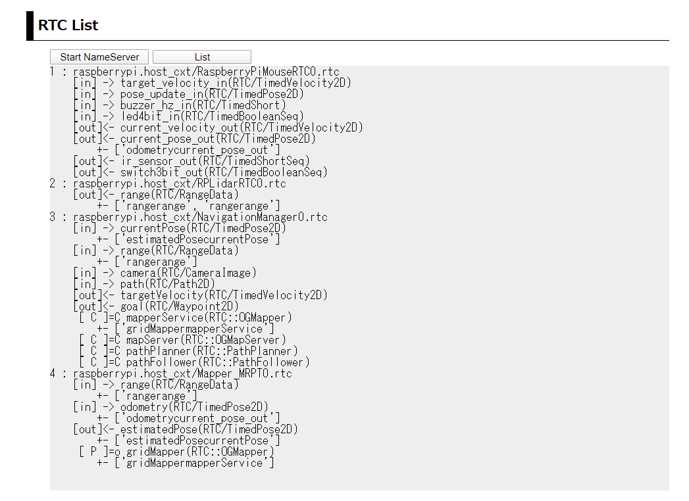
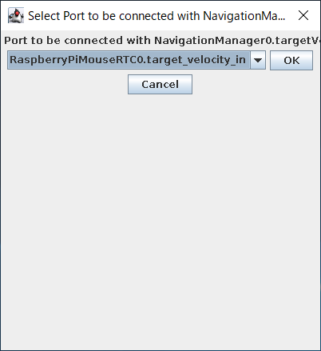

概要¶
このシステムでは、RasPiMouse2019に搭載しているLiDARからの情報をベースに slamによるナビゲーション地図の作成を行うシステムについて述べます。
このシステムでは、RaspberryPiMouseRTC, RPLidarRTC, Mapper_MRPT, NavigationManagerの4つのRTCを使用します。 また各RTC間の接続は、下図のようになります。

RTCの起動¶
RTCの起動は、Webブラウザを利用する場合には、トップページの第3セクション "Mapper"の部分を使用します。 ナビゲーションRTCのシステムに対しては、 下図のように「Start」、「Connect」、「Activate」、「Deactivate」、「Stop」の5つのオペレーションがあります。

ナビゲーション地図作成システムに必要なRTCの起動に「Start」を押下してください。 起動メッセージのページに遷移後、3秒後に自動でトップページに戻ります。
トップページに移行後、第2セクションの "RTC List" には、現在起動中のRTCの一覧が 表示されますが、RTCによって起動時間が異なりますので、全てのRTCが起動完了するまで しばらくお待ちください。
NavigationManagerはGUIを伴いますので、おそらく一番最後に起動すると思います。 全てのRTCが起動すると、下図のようなNavigationManagerの操作パネルが表示されます。

また、第2セクションの「List」を押下すると下図のようにRTCのリストが表示されます。
Webブラウザを使用せずに、ターミナルでRasPiMouse2019にログインする場合には、 下記のコマンドを入力すると上記と同じ結果が得らえます。
$ /usr/local/openrtm/bin/mapper.sh start
ナビゲーション地図生成構築（ポートの接続）¶
必要なRTCの起動後は、ナビゲーション地図作成システムを構成するために、 各RTCのポートの接続を行います。 最終的なシステム構成は、概要で表示した図の通りになります。 この構成を外部のRT System Editorを使って手動で接続しても良いのですが、 第3セクションの「Connect」ボタンを押下することで必要な接続を行うことができます。
ポートの接続後、第2セクションの「List」を押下すると下図のようなリストが得られます。
また、rtcmd を用いて graphコマンドを実行すると下図のようなシステム構成図を得ることができます。

また、Webブラウザを使用せずに、ターミナルでRasPiMouse2019にログインする場合には、 下記のコマンドを入力すると上記と同じ結果が得らえます。
$ /usr/local/openrtm/bin/mapper.sh connect
ナビゲーション地図生成の実行¶
RTCのポート接続が完了後、ナビゲーション地図作成を行います。 地図生成に係る4つのRTCをアクティベートしてください。
RTCのアクティベート¶
アクティベートの方法は、 Webブラウザ、ターミナルでログイン後にコマンド入力、 クライアントPC上のopenrtp、rtcmd等の外部ツールのいづれかを使用してください。
ここでは、Webブラウザとターミナルでログイン後のコマンドライン入力の2つの方法を紹介します。
Webブラウザでは、第3セクションの「Activation」ボタンを押下することで全てのRTCをアクティベートすることができます。 ターミナルからのコマンドライン入力では、下記のコマンドで同様に全てのRTCをアクティベートすることが可能です。
$ /usr/local/openrtm/mapper.sh activate
すべてのRTCを有効化すると、下図のようにNavigationManagerの右側のペインに座標軸のみが表示された 空の地図が表示されます。

現在の設定では、10m x 10mの地図を作成することができます。 より広い地図を作成する必要がある場合には、/usr/local/openrtm/etc/Mapper_MRPT.confのパラメータを 変更してください。
ナビゲーション地図の作成¶
システムのRTCのアクティベーション後は、 ナビゲーション地図を作成するために NavigationManagerの上部にある 「Start Mapping」ボタンを押下してください。 これによって、下図のようにRasPiMouse2019のLidarの情報を元にナビゲーション地図作成が開始されます。

上図のようにナビゲーション地図作成が開始されれば、NavigationManagerのJoystickパネルを用いて 手動でRasPiMouse2019を移動させてください。
Joystickパネルによる操作¶
NavigationManagerのJoystickは、メニューの [Control] -> [Start Control]を選択することで、 下図のような接続ダイアログが表示されますので、「OK」ボタンで選択してください。
正常にポート接続が完了すれば下図のような仮想Joystickが表示されますので、 RasPiMouse2019を移動させ、ナビゲーション地図を完成させてください。

しばらくRasPiMouse2019を移動させると下図のようなナビゲーション地図が得られます。

ナビゲーション地図の保存¶
最後に作成したナビゲーション地図を保存します。 NavigationManagerの「Save Mapping」ボタンを押下してください。 ファイル名選択ダイアログが表示されますので、/usr/local/openrtm/testMap.png と いう名前で保存してください。
ここで保存したファイル名(testMap)は、 自己位置同定システムや経路生成システムで使用するMapServerのデフォルト値になっています。
ナビゲーション地図生成システムの終了¶
ナビゲーション地図の保存が終了後は、RTCの終了を行います。 RTCの終了はWebブラウザの第3セクションの「Stop」ボタンを押下するか、 ターミナルでログイン後に下記のコマンド入力を行うことで行ってください。
$ /usr/local/openrtm/bin/mapper.sh stop
上記の例では、「Disconnct」と「Deactivate」を使用しませんでしたが、 起動中のRTCをそのまま使い自己位置同定システム等を実行する場合には 適宜利用することができます。